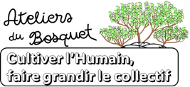
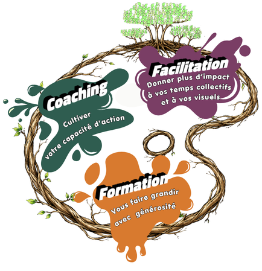
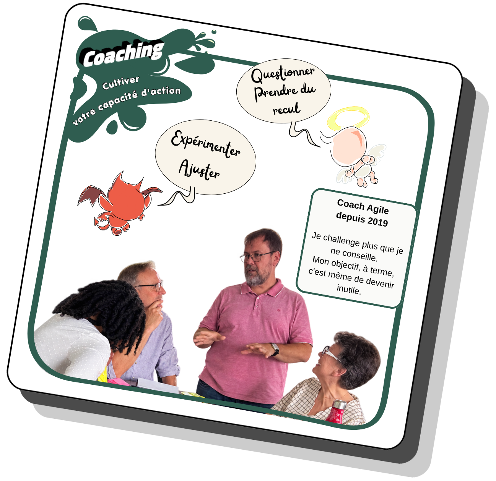
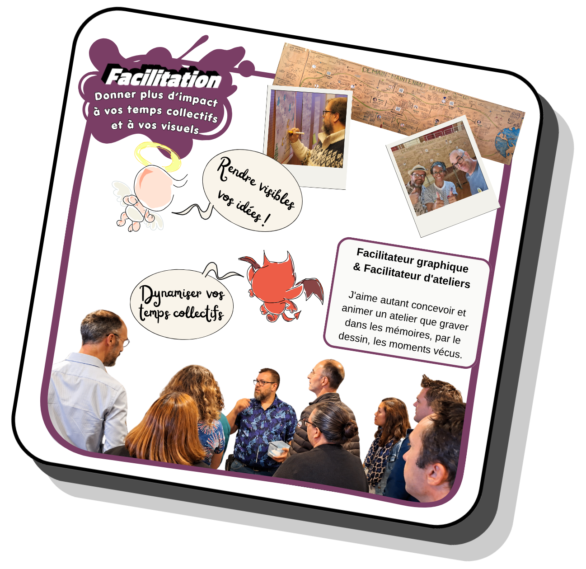
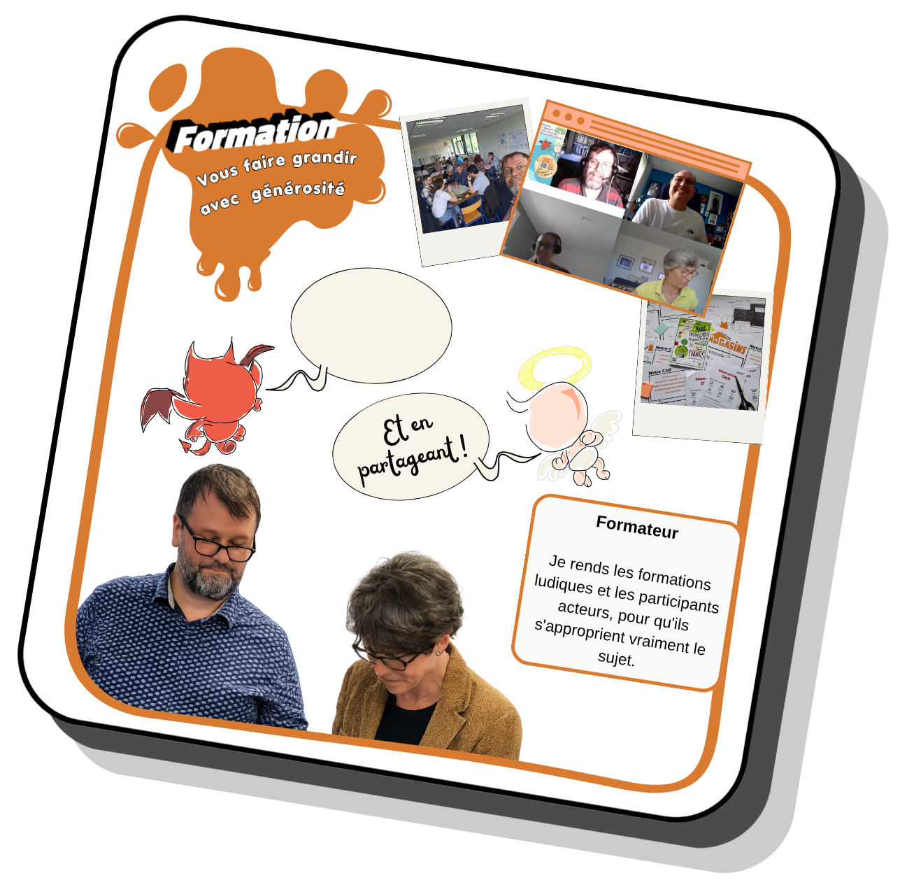
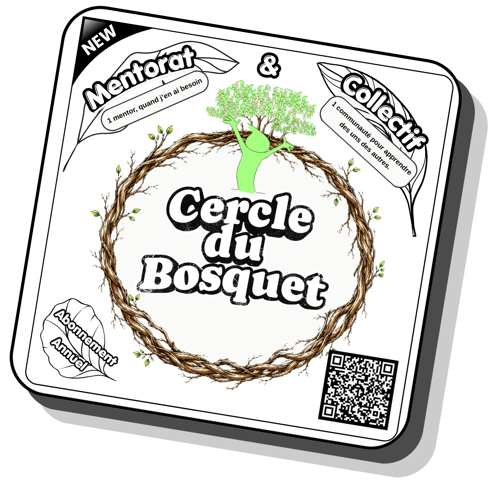

Faire grandir les équipes
Prendre du recul sur les dynamiques d’équipe, clarifier les besoins et expérimenter de nouvelles façons de travailler.

Stéphane Vandenbussche
J’aide les équipes et les personnes qui les accompagnent à concevoir des moments collectifs utiles, vivants et engageants.
Une palette de prestations
Selon votre besoin, je peux vous accompagner, faciliter vos temps collectifs ou vous aider à développer vos propres pratiques.

01 / Coaching

Coach agile depuis 2019
Une écoute pour comprendre vos enjeux et vous aider concrètement

Prendre du recul sur les dynamiques d’équipe, clarifier les besoins et expérimenter de nouvelles façons de travailler.
Relier les objectifs au terrain avec les OKR, le management visuel et des échanges qui font avancer.
Développer l’autonomie et les communautés de pratique, puis ajuster à partir de l’expérience.
02 / Facilitation

Facilitateur graphique & facilitateur d’ateliers
Facilitation des échanges, par l’animation comme par le dessin.

Construire un déroulé adapté à votre intention, aux participants et au résultat attendu.
Animer des échanges pour partager les points de vue, faire émerger des idées et décider ensemble.
Fresques, sketchnotes et supports visuels pour clarifier les échanges et garder une trace utile.
03 / Formation

Formateur
« On ne peut rien enseigner à autrui. On ne peut que l’aider à le découvrir lui-même. » attribué à Galilée

Passer d’une idée à un atelier cohérent : Pourquoi, Produit, Participants, Lieu, Préparation, Pratique et Processus.
Dépasser la peur de dessiner et acquérir un vocabulaire visuel simple pour expliquer, animer et mémoriser.
Créer une expérience d’apprentissage active, structurée et adaptée aux besoins réels des participants.
Le Cercle du Bosquet
Un mentorat dans la durée pour préparer vos ateliers, réunions, formations et supports, puis prendre du recul après leur mise en pratique.
Rendez-vous individuels, échanges asynchrones, temps collectifs, communauté de pratique et bibliothèque vivante.
Découvrir le Cercle du Bosquet
Pour passer à l’action
Templates, mini-ateliers et supports pour commencer à concevoir vos moments collectifs et développer votre pratique visuelle.
Retrouvez notamment le template 7P et ses mini-ateliers, ainsi que mes autres supports en ligne.
Préparer votre projet
Les tarifs publics et les tarifs réservés aux membres du Cercle du Bosquet.
700 € TTC / an
À partir de 1 200 € HT / an
À propos
Je suis Stéphane Vandenbussche, coach agile, facilitateur visuel et formateur. J’accompagne les collectifs pour qu’ils réfléchissent, décident et avancent ensemble avec plus de clarté.
Mon approche mêle design d’atelier, intelligence collective, agilité et pensée visuelle. L’objectif n’est pas d’appliquer une recette, mais de développer votre propre capacité d’action.
Un atelier, une formation, un besoin à clarifier ?